Code
```{r a, comment="", collapse=TRUE, warning=FALSE, message=FALSE, results='hide'}
library(terra)
library(sf)
library(raster)
library(tmap)
library(tmaptools)
library(lidR)
library(RStoolbox)
```Manage large LiDAR datasets with LAS catalogs.
Convert LiDAR data to raster grids for analysis.
Extract indices from satellite image bands.
Apply PCA and Tasseled Cap transformations to multispectral data.
Assess environmental changes through date-based index comparisons.
Implement moving windows for enhanced image analysis.
This project delves into the realm of LiDAR and image processing in R, utilizing the lidR package. The scope expands to encompass diverse raster data insights, with a primary focus on remotely sensed imagery. The objectives cover a spectrum of tasks, from efficiently handling LiDAR data to employing advanced techniques for comprehensive spatial analysis.
```{r a, comment="", collapse=TRUE, warning=FALSE, message=FALSE, results='hide'}
library(terra)
library(sf)
library(raster)
library(tmap)
library(tmaptools)
library(lidR)
library(RStoolbox)
```Before we start, it’s important to note that the LiDAR data used in the examples are large files, typical for point cloud datasets. Executing the code may take some time, and results will be written to your hard drive. Feel free to read through the examples without running the code.
The LiDAR data, obtained using the WV Elevation and LiDAR Download Tool, consists of six adjacent tiles. Instead of reading them separately, I’ll use a LAS catalog, allowing collective processing of multiple LAS files, akin to a LAS Dataset in ArcGIS. This approach demonstrates efficient handling of large volumes of LiDAR data.
In the first example, I read all six LAS files from a folder using the readLAScatalog() function. Since the LiDAR data doesn’t include projection information, I manually define it using the projection() function. This step is data-dependent. The summary() function provides an overview of the catalog, including spatial extent, projection, area covered, point statistics, and the number of files. lascheck() assesses data issues, though the noted issues won’t impact our processing. It’s recommended to run this function after data are imported to check for any issues.
```{r b, message=FALSE}
las_cat <- readLAScatalog("lidar")
projection(las_cat) <- "+proj=utm +zone=17 +ellps=GRS80 +datum=NAD83 +units=m +no_defs "
summary(las_cat)
las_check(las_cat)
```class : LAScatalog (v1.4 format 6)
extent : 548590.2, 553090.2, 4183880, 4186880 (xmin, xmax, ymin, ymax)
coord. ref. : unknown
area : 13.5 km²
points : 69.34 million points
density : 5.1 points/m²
density : 3.9 pulses/m²
num. files : 6
proc. opt. : buffer: 30 | chunk: 0
input opt. : select: * | filter:
output opt. : in memory | w2w guaranteed | merging enabled
drivers :
- Raster : format = GTiff NAflag = -999999
- stars : NA_value = -999999
- SpatRaster : overwrite = FALSE NAflag = -999999
- SpatVector : overwrite = FALSE
- LAS : no parameter
- Spatial : overwrite = FALSE
- sf : quiet = TRUE
- data.frame : no parameter
Checking headers consistency
- Checking file version consistency...[0;32m ✓[0m
- Checking scale consistency...[0;32m ✓[0m
- Checking offset consistency...[0;32m ✓[0m
- Checking point type consistency...[0;32m ✓[0m
- Checking VLR consistency...
[0;31m ✗ Inconsistent number of VLR[0m
- Checking CRS consistency...[0;32m ✓[0m
Checking the headers
- Checking scale factor validity...[0;32m ✓[0m
- Checking Point Data Format ID validity...[0;32m ✓[0m
Checking preprocessing already done
- Checking negative outliers...[0;32m ✓[0m
- Checking normalization...[0;31m no[0m
Checking the geometry
- Checking overlapping tiles...[0;32m ✓[0m
- Checking point indexation...[0;31m no[0mOnce you’ve defined processing options, you can conduct analyses and process the data. In this example, I’m generating a Digital Terrain Model (DTM) to portray ground elevations excluding above-ground features. A new processing option is set to specify where to store the resulting raster grids locally, labeled with the bottom-left coordinate of the extent. Within the grid_terrain() function, the output cell size is set to 2-by-2 meters. The k-nearest neighbor inverse distance weighting interpolation method is employed with 10 neighbors and a power of 2.
```{r c, message=FALSE}
opt_chunk_size(las_cat) <- 500
plot(las_cat, chunk_pattern = TRUE)
opt_chunk_buffer(las_cat) <- 20
plot(las_cat, chunk_pattern = TRUE)
summary(las_cat)
```class : LAScatalog (v1.4 format 6)
extent : 548590.2, 553090.2, 4183880, 4186880 (xmin, xmax, ymin, ymax)
coord. ref. : unknown
area : 13.5 km²
points : 69.34 million points
density : 5.1 points/m²
density : 3.9 pulses/m²
num. files : 6
proc. opt. : buffer: 20 | chunk: 500
input opt. : select: * | filter:
output opt. : in memory | w2w guaranteed | merging enabled
drivers :
- Raster : format = GTiff NAflag = -999999
- stars : NA_value = -999999
- SpatRaster : overwrite = FALSE NAflag = -999999
- SpatVector : overwrite = FALSE
- LAS : no parameter
- Spatial : overwrite = FALSE
- sf : quiet = TRUE
- data.frame : no parameter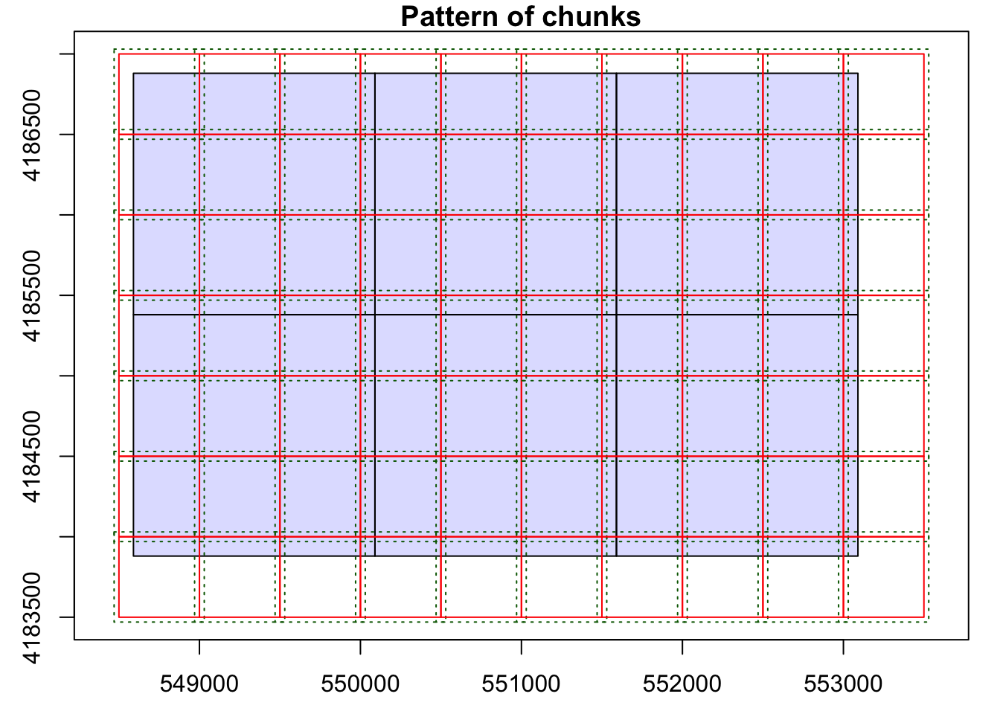
```{r d, message=FALSE}
opt_output_files(las_cat) <- "las_out/dtm_{XLEFT}_{YBOTTOM}"
dtm <- grid_terrain(las_cat, res = 2, knnidw(k = 10, p = 2), keep_lowest = FALSE)
```Chunk 1 of 70 (1.4%): state ⚠
Chunk 2 of 70 (2.9%): state ⚠
Chunk 3 of 70 (4.3%): state ⚠
Chunk 4 of 70 (5.7%): state ⚠
Chunk 5 of 70 (7.1%): state ⚠
Chunk 6 of 70 (8.6%): state ⚠
Chunk 7 of 70 (10%): state ⚠
Chunk 8 of 70 (11.4%): state ⚠
Chunk 9 of 70 (12.9%): state ⚠
Chunk 10 of 70 (14.3%): state ✓
Chunk 11 of 70 (15.7%): state ⚠
Chunk 12 of 70 (17.1%): state ⚠
Chunk 13 of 70 (18.6%): state ⚠
Chunk 14 of 70 (20%): state ⚠
Chunk 15 of 70 (21.4%): state ⚠
Chunk 16 of 70 (22.9%): state ⚠
Chunk 17 of 70 (24.3%): state ⚠
Chunk 18 of 70 (25.7%): state ⚠
Chunk 19 of 70 (27.1%): state ⚠
Chunk 20 of 70 (28.6%): state ⚠
Chunk 21 of 70 (30%): state ⚠
Chunk 22 of 70 (31.4%): state ⚠
Chunk 23 of 70 (32.9%): state ⚠
Chunk 24 of 70 (34.3%): state ⚠
Chunk 25 of 70 (35.7%): state ⚠
Chunk 26 of 70 (37.1%): state ⚠
Chunk 27 of 70 (38.6%): state ⚠
Chunk 28 of 70 (40%): state ⚠
Chunk 29 of 70 (41.4%): state ⚠
Chunk 30 of 70 (42.9%): state ⚠
Chunk 31 of 70 (44.3%): state ⚠
Chunk 32 of 70 (45.7%): state ⚠
Chunk 33 of 70 (47.1%): state ⚠
Chunk 34 of 70 (48.6%): state ⚠
Chunk 35 of 70 (50%): state ⚠
Chunk 36 of 70 (51.4%): state ⚠
Chunk 37 of 70 (52.9%): state ⚠
Chunk 38 of 70 (54.3%): state ⚠
Chunk 39 of 70 (55.7%): state ⚠
Chunk 40 of 70 (57.1%): state ⚠
Chunk 41 of 70 (58.6%): state ⚠
Chunk 42 of 70 (60%): state ⚠
Chunk 43 of 70 (61.4%): state ⚠
Chunk 44 of 70 (62.9%): state ⚠
Chunk 45 of 70 (64.3%): state ⚠
Chunk 46 of 70 (65.7%): state ⚠
Chunk 47 of 70 (67.1%): state ⚠
Chunk 48 of 70 (68.6%): state ⚠
Chunk 49 of 70 (70%): state ⚠
Chunk 50 of 70 (71.4%): state ⚠
Chunk 51 of 70 (72.9%): state ⚠
Chunk 52 of 70 (74.3%): state ⚠
Chunk 53 of 70 (75.7%): state ⚠
Chunk 54 of 70 (77.1%): state ⚠
Chunk 55 of 70 (78.6%): state ⚠
Chunk 56 of 70 (80%): state ⚠
Chunk 57 of 70 (81.4%): state ⚠
Chunk 58 of 70 (82.9%): state ⚠
Chunk 59 of 70 (84.3%): state ⚠
Chunk 60 of 70 (85.7%): state ⚠
Chunk 61 of 70 (87.1%): state ⚠
Chunk 62 of 70 (88.6%): state ⚠
Chunk 63 of 70 (90%): state ⚠
Chunk 64 of 70 (91.4%): state ⚠
Chunk 65 of 70 (92.9%): state ⚠
Chunk 66 of 70 (94.3%): state ⚠
Chunk 67 of 70 (95.7%): state ⚠
Chunk 68 of 70 (97.1%): state ⚠
Chunk 69 of 70 (98.6%): state ⚠
Chunk 70 of 70 (100%): state ⚠
```{r e, message=FALSE}
tm_shape(dtm)+
tm_raster(style= "quantile", palette=get_brewer_pal("Greys", plot=FALSE))+
tm_layout(legend.outside = TRUE)
```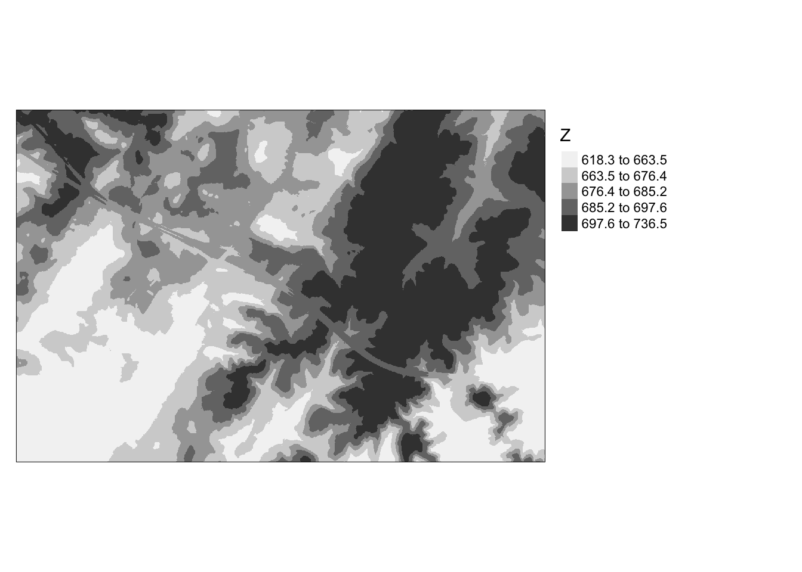
A hillshade provides a visual representation of a terrain surface by simulating illumination from a specified position. In R, the process differs from ArcGIS. Initially, slope and aspect surfaces need to be generated, followed by using these surfaces to create a hillshade with a defined illuminating position. The necessary functions are provided by the raster package. In this example, the illuminating source is positioned in the northwest at a 45-degree angle above the horizon. The subsequent code block displays the hillshade using tmap.
slope <- terrain(dtm, opt='slope')
aspect <- terrain(dtm, opt='aspect')
hs <- hillShade(slope, aspect, angle=45, direction=315)tm_shape(hs)+
tm_raster(style= "cont", palette=get_brewer_pal("Greys", plot=FALSE))+
tm_layout(legend.outside = TRUE)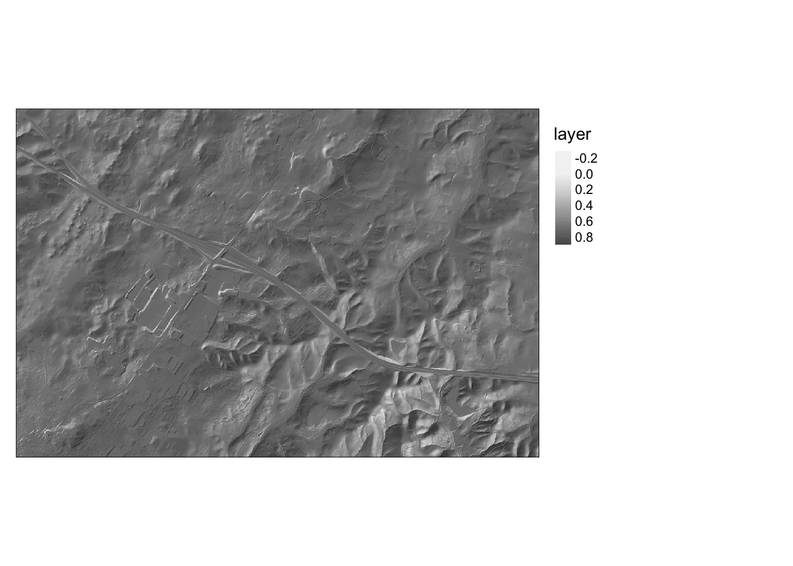
The lasnorm() function subtracts ground elevations from each point, requiring input LAS data and a DTM, and writes LAS files to disk. I’ve specified a new folder path to store the output. These normalized points enable the creation of a Canopy Height Model (CHM) or Normalized Digital Surface Model (nDSM), where grid values represent heights above the ground.
```{r i, message=FALSE, results='hide'}
opt_output_files(las_cat) <- "las_out/norm/norm_{XLEFT}_{YBOTTOM}"
lasnorm <- normalize_height(las_cat, dtm)
```Next, the grid_canopy() function generates a Digital Surface Model (DSM). If normalized data are provided, the result is a CHM or nDSM. In this instance, I’m using the original point cloud data without normalization. After generating the surface, it can be saved to a permanent file. The pitfree algorithm is applied to produce a smoothed model or remove pits.
```{r j, message=FALSE}
opt_output_files(las_cat) <- "las_out/dsm/dsm_{XLEFT}_{YBOTTOM}"
dsm <- grid_canopy(las_cat, res = 2, pitfree(c(0,2,5,10,15), c(0, 1)))
```Chunk 1 of 70 (1.4%): state ✓
Chunk 2 of 70 (2.9%): state ✓
Chunk 3 of 70 (4.3%): state ✓
Chunk 4 of 70 (5.7%): state ✓
Chunk 5 of 70 (7.1%): state ✓
Chunk 6 of 70 (8.6%): state ✓
Chunk 7 of 70 (10%): state ✓
Chunk 8 of 70 (11.4%): state ✓
Chunk 9 of 70 (12.9%): state ✓
Chunk 10 of 70 (14.3%): state ✓
Chunk 11 of 70 (15.7%): state ✓
Chunk 12 of 70 (17.1%): state ✓
Chunk 13 of 70 (18.6%): state ✓
Chunk 14 of 70 (20%): state ✓
Chunk 15 of 70 (21.4%): state ✓
Chunk 16 of 70 (22.9%): state ✓
Chunk 17 of 70 (24.3%): state ✓
Chunk 18 of 70 (25.7%): state ✓
Chunk 19 of 70 (27.1%): state ✓
Chunk 20 of 70 (28.6%): state ✓
Chunk 21 of 70 (30%): state ✓
Chunk 22 of 70 (31.4%): state ✓
Chunk 23 of 70 (32.9%): state ✓
Chunk 24 of 70 (34.3%): state ✓
Chunk 25 of 70 (35.7%): state ✓
Chunk 26 of 70 (37.1%): state ✓
Chunk 27 of 70 (38.6%): state ✓
Chunk 28 of 70 (40%): state ✓
Chunk 29 of 70 (41.4%): state ✓
Chunk 30 of 70 (42.9%): state ✓
Chunk 31 of 70 (44.3%): state ✓
Chunk 32 of 70 (45.7%): state ✓
Chunk 33 of 70 (47.1%): state ✓
Chunk 34 of 70 (48.6%): state ✓
Chunk 35 of 70 (50%): state ✓
Chunk 36 of 70 (51.4%): state ✓
Chunk 37 of 70 (52.9%): state ✓
Chunk 38 of 70 (54.3%): state ✓
Chunk 39 of 70 (55.7%): state ✓
Chunk 40 of 70 (57.1%): state ✓
Chunk 41 of 70 (58.6%): state ✓
Chunk 42 of 70 (60%): state ✓
Chunk 43 of 70 (61.4%): state ✓
Chunk 44 of 70 (62.9%): state ✓
Chunk 45 of 70 (64.3%): state ✓
Chunk 46 of 70 (65.7%): state ✓
Chunk 47 of 70 (67.1%): state ✓
Chunk 48 of 70 (68.6%): state ✓
Chunk 49 of 70 (70%): state ✓
Chunk 50 of 70 (71.4%): state ✓
Chunk 51 of 70 (72.9%): state ✓
Chunk 52 of 70 (74.3%): state ✓
Chunk 53 of 70 (75.7%): state ✓
Chunk 54 of 70 (77.1%): state ✓
Chunk 55 of 70 (78.6%): state ✓
Chunk 56 of 70 (80%): state ✓
Chunk 57 of 70 (81.4%): state ✓
Chunk 58 of 70 (82.9%): state ✓
Chunk 59 of 70 (84.3%): state ✓
Chunk 60 of 70 (85.7%): state ✓
Chunk 61 of 70 (87.1%): state ✓
Chunk 62 of 70 (88.6%): state ✓
Chunk 63 of 70 (90%): state ✓
Chunk 64 of 70 (91.4%): state ✓
Chunk 65 of 70 (92.9%): state ✓
Chunk 66 of 70 (94.3%): state ✓
Chunk 67 of 70 (95.7%): state ✓
Chunk 68 of 70 (97.1%): state ✓
Chunk 69 of 70 (98.6%): state ✓
Chunk 70 of 70 (100%): state ✓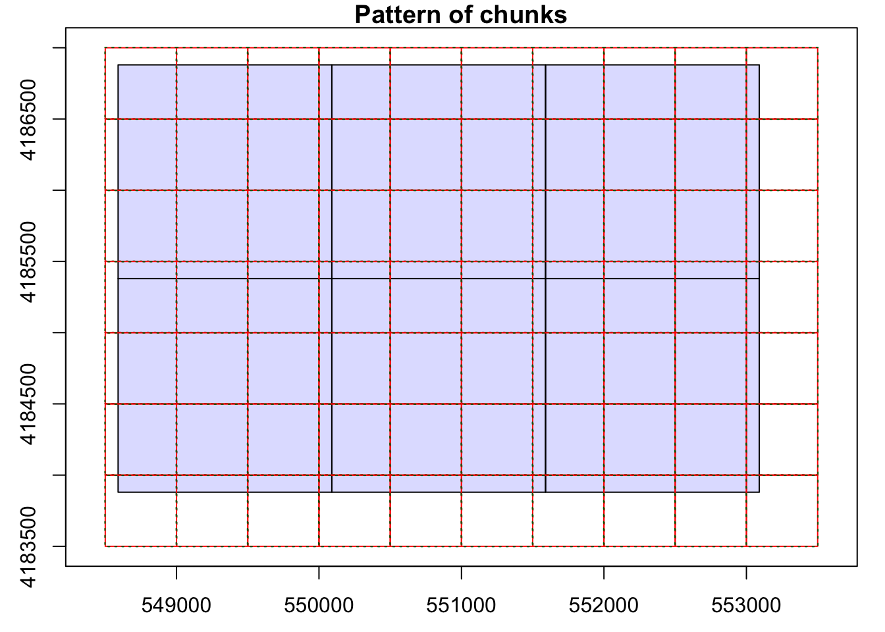
```{r l, message=FALSE}
ndsm <- dsm - dtm
ndsm[ndsm<0]=0
ndsm
```class : RasterLayer
dimensions : 1501, 2251, 3378751 (nrow, ncol, ncell)
resolution : 2, 2 (x, y)
extent : 548590, 553092, 4183878, 4186880 (xmin, xmax, ymin, ymax)
crs : +proj=utm +zone=17 +datum=NAD83 +units=m +no_defs
source : memory
names : layer
values : 0, 175.455 (min, max)```{r m, message=FALSE, results='hide'}
tm_shape(ndsm)+
tm_raster(style= "quantile", n=7, palette=get_brewer_pal("Greens", n=7, plot=FALSE))+
tm_layout(legend.outside = TRUE)
```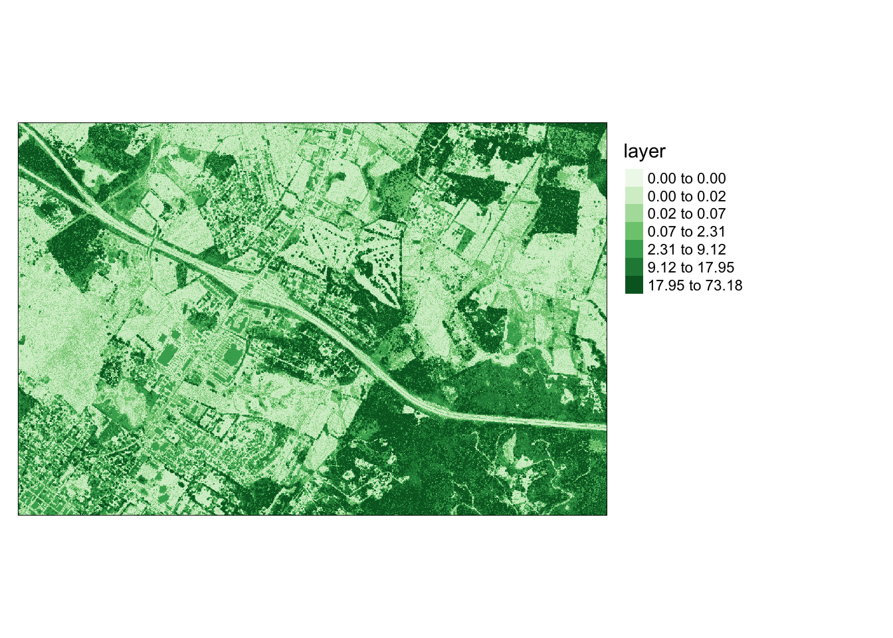
The grid_metrics() function allows the calculation of statistics from point data within each grid cell. In this example, I compute the mean elevation from the first return data within 10-by-10 meter cells. Beforehand, I set a filter option to consider only the first returns. The results are then displayed using tmap.
```{r n, message=FALSE}
opt_output_files(las_cat) <- "las_out/means/means_{XLEFT}_{YBOTTOM}"
opt_filter(las_cat) <- "-keep_first"
metrics <- grid_metrics(las_cat, ~mean(Z), 10)
```Chunk 1 of 70 (1.4%): state ✓
Chunk 2 of 70 (2.9%): state ✓
Chunk 3 of 70 (4.3%): state ✓
Chunk 4 of 70 (5.7%): state ✓
Chunk 5 of 70 (7.1%): state ✓
Chunk 6 of 70 (8.6%): state ✓
Chunk 7 of 70 (10%): state ✓
Chunk 8 of 70 (11.4%): state ✓
Chunk 9 of 70 (12.9%): state ✓
Chunk 10 of 70 (14.3%): state ✓
Chunk 11 of 70 (15.7%): state ✓
Chunk 12 of 70 (17.1%): state ✓
Chunk 13 of 70 (18.6%): state ✓
Chunk 14 of 70 (20%): state ✓
Chunk 15 of 70 (21.4%): state ✓
Chunk 16 of 70 (22.9%): state ✓
Chunk 17 of 70 (24.3%): state ✓
Chunk 18 of 70 (25.7%): state ✓
Chunk 19 of 70 (27.1%): state ✓
Chunk 20 of 70 (28.6%): state ✓
Chunk 21 of 70 (30%): state ✓
Chunk 22 of 70 (31.4%): state ✓
Chunk 23 of 70 (32.9%): state ✓
Chunk 24 of 70 (34.3%): state ✓
Chunk 25 of 70 (35.7%): state ✓
Chunk 26 of 70 (37.1%): state ✓
Chunk 27 of 70 (38.6%): state ✓
Chunk 28 of 70 (40%): state ✓
Chunk 29 of 70 (41.4%): state ✓
Chunk 30 of 70 (42.9%): state ✓
Chunk 31 of 70 (44.3%): state ✓
Chunk 32 of 70 (45.7%): state ✓
Chunk 33 of 70 (47.1%): state ✓
Chunk 34 of 70 (48.6%): state ✓
Chunk 35 of 70 (50%): state ✓
Chunk 36 of 70 (51.4%): state ✓
Chunk 37 of 70 (52.9%): state ✓
Chunk 38 of 70 (54.3%): state ✓
Chunk 39 of 70 (55.7%): state ✓
Chunk 40 of 70 (57.1%): state ✓
Chunk 41 of 70 (58.6%): state ✓
Chunk 42 of 70 (60%): state ✓
Chunk 43 of 70 (61.4%): state ✓
Chunk 44 of 70 (62.9%): state ✓
Chunk 45 of 70 (64.3%): state ✓
Chunk 46 of 70 (65.7%): state ✓
Chunk 47 of 70 (67.1%): state ✓
Chunk 48 of 70 (68.6%): state ✓
Chunk 49 of 70 (70%): state ✓
Chunk 50 of 70 (71.4%): state ✓
Chunk 51 of 70 (72.9%): state ✓
Chunk 52 of 70 (74.3%): state ✓
Chunk 53 of 70 (75.7%): state ✓
Chunk 54 of 70 (77.1%): state ✓
Chunk 55 of 70 (78.6%): state ✓
Chunk 56 of 70 (80%): state ✓
Chunk 57 of 70 (81.4%): state ✓
Chunk 58 of 70 (82.9%): state ✓
Chunk 59 of 70 (84.3%): state ✓
Chunk 60 of 70 (85.7%): state ✓
Chunk 61 of 70 (87.1%): state ✓
Chunk 62 of 70 (88.6%): state ✓
Chunk 63 of 70 (90%): state ✓
Chunk 64 of 70 (91.4%): state ✓
Chunk 65 of 70 (92.9%): state ✓
Chunk 66 of 70 (94.3%): state ✓
Chunk 67 of 70 (95.7%): state ✓
Chunk 68 of 70 (97.1%): state ✓
Chunk 69 of 70 (98.6%): state ✓
Chunk 70 of 70 (100%): state ✓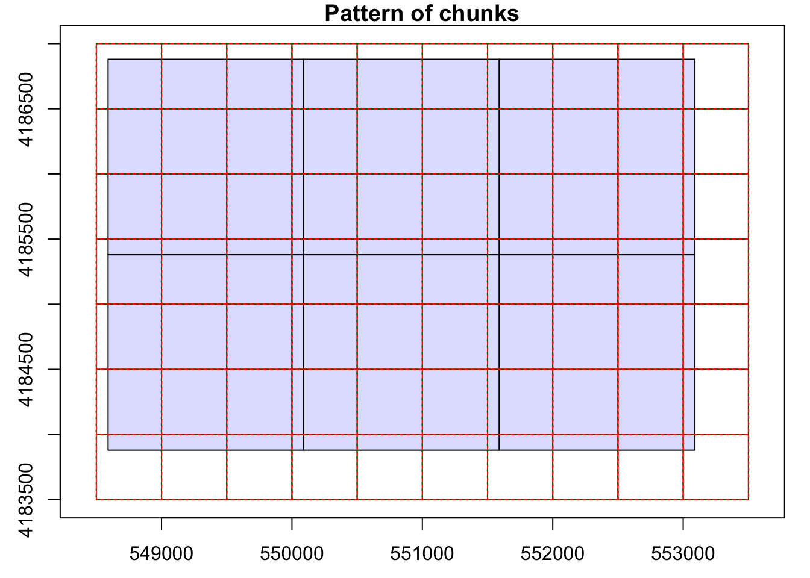
```{r o, message=FALSE}
metrics[metrics<0]=0
tm_shape(metrics)+
tm_raster(style= "quantile", n=7, palette=get_brewer_pal("Greens", n=7, plot=FALSE))+
tm_layout(legend.outside = TRUE)
```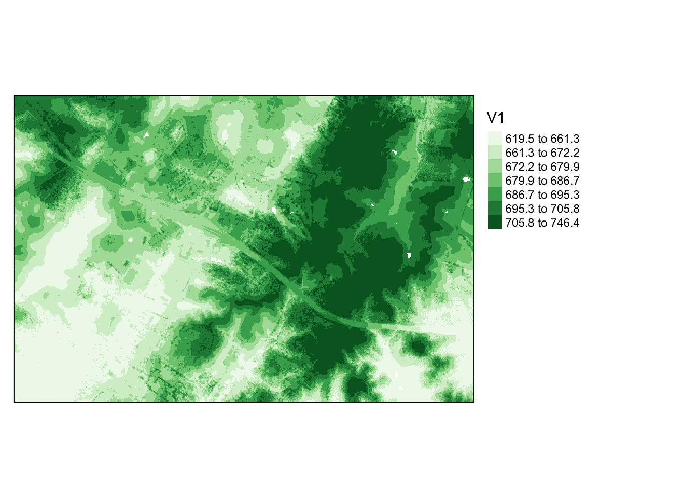
In addition to elevation measurements, LiDAR data can store return intensity information, representing the proportion of emitted energy associated with each return from laser pulses. The following code blocks visualize intensity values, showcasing the mean first return intensity within 5-by-5 meter cells. This visualization offers valuable insights into the LiDAR data.
```{r p, message=FALSE, results='hide'}
opt_output_files(las_cat) <- "las_out/int/int_{XLEFT}_{YBOTTOM}"
opt_filter(las_cat) <- "-keep_first"
int <- grid_metrics(las_cat, ~mean(Intensity), 5)
``````{r q, message=FALSE}
int[int<0]=0
tm_shape(int)+
tm_raster(style= "quantile", n=7, palette=get_brewer_pal("-Greys", n=7, plot=FALSE))+
tm_layout(legend.outside = TRUE)
```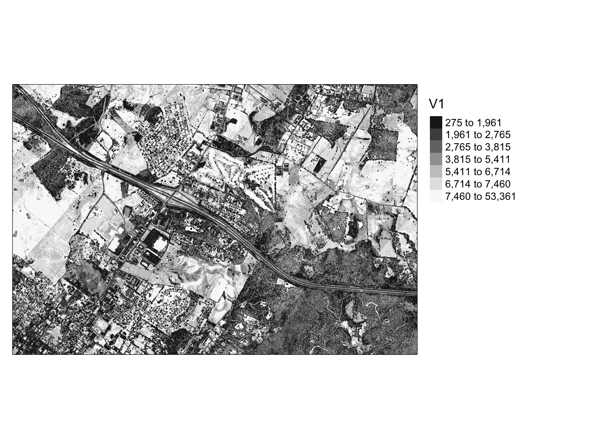
In this final LiDAR example, a single LAS file is read in. A Digital Terrain Model (DTM) is generated from the point cloud, followed by normalizing the data using the DTM. Subsequently, voxels are generated from the data, where each voxel represents a 3D cube rather than a traditional 2D grid cell. In this instance, a voxel is created with dimensions of 5 meters in all three dimensions, storing the standard deviation of the normalized height measurements from the returns within it.
Voxels play a crucial role in analyzing 3D point clouds, offering a valuable tool, for instance, in exploring the 3D structure of forests.
```{r r, message=FALSE, results='hide'}
las1 <- readLAS("lidar/CO195.las")
las1_dtm <- grid_terrain(las1, res = 2, knnidw(k = 10, p = 2), keep_lowest = FALSE)
las1_n <- normalize_height(las1, las1_dtm)
las1_vox <- grid_metrics(las1_n, ~sd(Z), res = 5)
```Let’s delve into methods for processing remotely sensed imagery. Our first step is to calculate the Normalized Difference Vegetation Index (NDVI) from Landsat 8 Operational Land Imager (OLI) data. NDVI is computed by subtracting the Near-Infrared (NIR) and red channels, then dividing by their sum. In this case, Band 5 corresponds to NIR, and Band 4 corresponds to red. The following code block performs this calculation and visualizes the result using tmap.
Dark green areas on the plot signify vegetated regions like forests and fields, while lighter areas indicate non-vegetated areas or areas with stressed or unhealthy vegetation.
```{r s, message=FALSE}
#You must set your own working directory.
ls8 <- brick("lidar/ls8example.tif")
plotRGB(ls8, r=5, g=4, b=3, stretch="lin")
```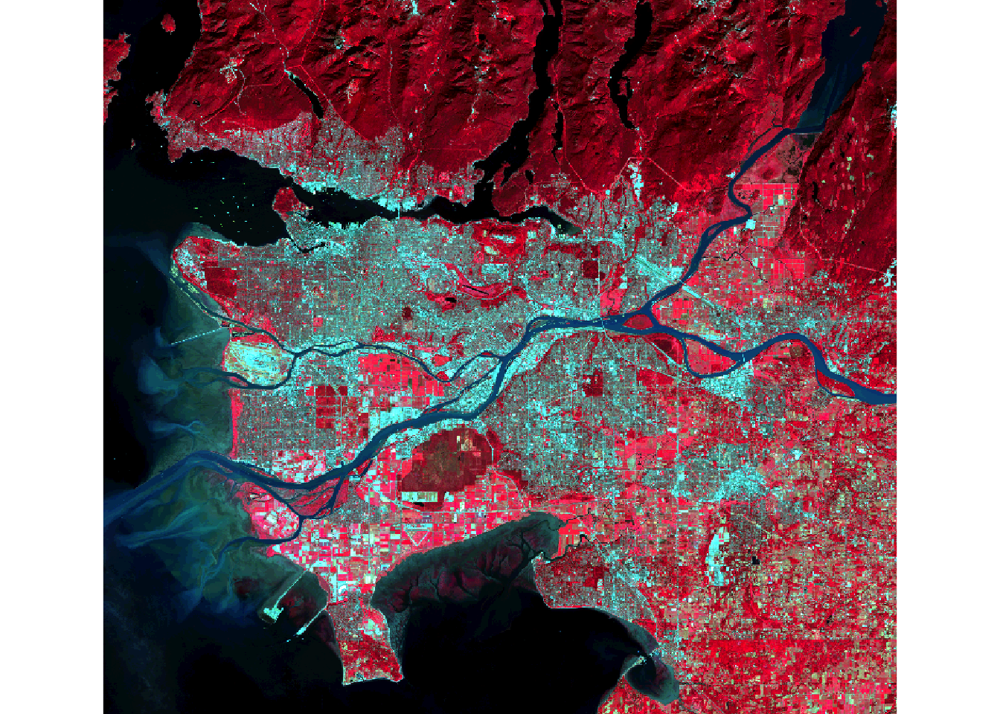
```{r t, message=FALSE}
#You must set your own working directory.
ndvi <- (ls8$Layer_5-ls8$Layer_4)/((ls8$Layer_5+ls8$Layer_4)+.001)
tm_shape(ndvi)+
tm_raster(style= "quantile", n=7, palette=get_brewer_pal("Greens", n = 7, plot=FALSE))+
tm_layout(legend.outside = TRUE)
```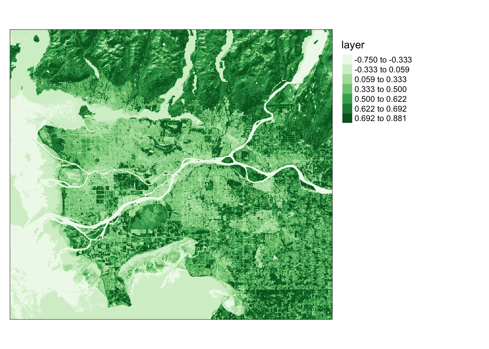
You can create principal component bands from a raw image using the rasterPCA() function from the RSToolbox() package. Principal Component Analysis (PCA) is employed to derive new, uncorrelated data from correlated data. Assuming variability in data represents information, PCA becomes a useful tool for capturing information content in fewer variables. When applied to imagery, it can generate uncorrelated bands from raw imagery, potentially reducing the number of bands needed to represent the information.
In this example, PCA is applied to all bands in the Landsat 8 image. The function generates a list object containing the new image and information about the PCA analysis. I extract the resulting raster bands and display the first three principal components as a false-color image.
```{r u, message=FALSE}
# Check and handle missing values for PCA
ls8 <- stack("lidar/ls8example.tif")
ls8 <- calc(ls8, function(x) ifelse(is.finite(x), x, NA))
``````{r asdf, message=FALSE}
ls8_pca <- rasterPCA(ls8, nSamples = NULL, nComp = nlayers(ls8), spca = FALSE)
```
|---------|---------|---------|---------|
=========================================
```{r v, message=FALSE}
ls8_pca_img <- stack(ls8_pca$map)
plotRGB(ls8_pca_img, r=1, b=2, g=3, stretch="lin")
```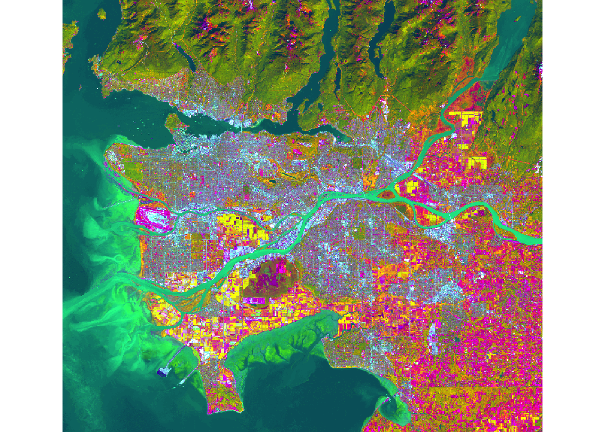
```{r w, message=FALSE}
ls8_pca$model
```Call:
princomp(cor = spca, covmat = covMat)
Standard deviations:
Comp.1 Comp.2 Comp.3 Comp.4 Comp.5 Comp.6 Comp.7
24.1772296 11.0168152 4.2179996 1.1382589 0.9980586 0.5632723 0.3406967
7 variables and 3666706 observations.```{r xxx, message=FALSE}
ls8_pca$model$loadings
```
Loadings:
Comp.1 Comp.2 Comp.3 Comp.4 Comp.5 Comp.6 Comp.7
layer.1 0.263 0.354 0.121 0.574 0.285 0.615
layer.2 0.319 0.410 0.116 0.372 -0.758
layer.3 0.104 0.287 0.390 0.124 -0.242 -0.796 0.215
layer.4 0.126 0.392 0.325 -0.671 0.522
layer.5 0.790 -0.529 0.290 -0.101
layer.6 0.512 0.360 -0.544 0.559
layer.7 0.285 0.429 -0.264 -0.795 0.150 -0.104
Comp.1 Comp.2 Comp.3 Comp.4 Comp.5 Comp.6 Comp.7
SS loadings 1.000 1.000 1.000 1.000 1.000 1.000 1.000
Proportion Var 0.143 0.143 0.143 0.143 0.143 0.143 0.143
Cumulative Var 0.143 0.286 0.429 0.571 0.714 0.857 1.000The Tasseled Cap transformation, akin to PCA, utilizes predefined values to generate brightness, greenness, and wetness bands from original spectral bands. Distinct coefficients are employed for various sensors, including Landsat Thematic Mapper (TM), Enhanced Thematic Mapper Plus (ETM+), and Operational Land Imager (OLI) data. In this instance, Landsat 7 ETM+ data is brought in using the brick() function.
The two images depict a section of the Black Hills of South Dakota before and after a fire event.
Upon reading the data, I rename the bands and apply defined coefficients to each band for the transformation. The results are summed to yield the transformation.
In the subsequent code, I stack the brightness, greenness, and wetness bands and visualize them as a false-color composite. The impact of the fire is evident in the resulting image.
```{r xyz, message=FALSE}
pre <- brick("lidar/pre_ref.img")
post <- brick("lidar/post_ref.img")
plotRGB(pre, r=6, g=4, b=2, stretch="lin")
plotRGB(post, r=6, g=4, b=2, stretch="lin")
```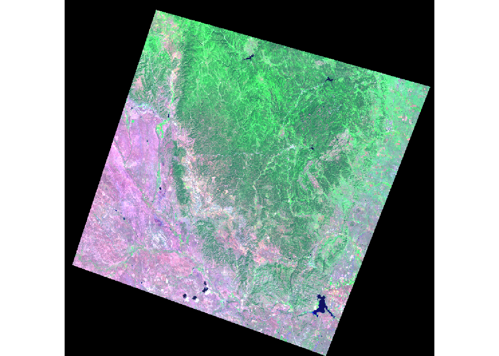
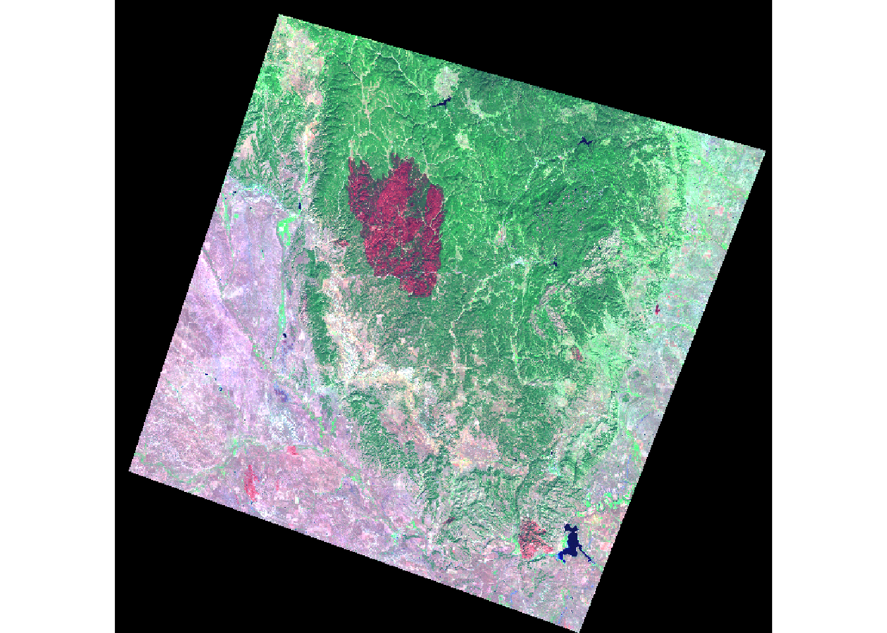
Once the data are read in, I rename the bands then apply the defined coefficients to each band for each transformation. I add the results to obtain the transformation.
In the next set of code, I stack the brightness, greenness, and wetness bands then display them as a false color composite. In the result, the extent of the fire is obvious.
```{r yy, message=FALSE}
names(pre) <- c("Blue", "Green", "Red", "NIR", "SWIR1", "SWIR2")
names(post) <- c("Blue", "Green", "Red", "NIR", "SWIR1", "SWIR2")
pre_brightness <- (pre$Blue*.3561) + (pre$Green*.3972) + (pre$Red*.3904) + (pre$NIR*.6966) + (pre$SWIR1*.2286) + (pre$SWIR2*.1596)
pre_greenness <- (pre$Blue*-.3344) + (pre$Green*-.3544) + (pre$Red*-.4556) + (pre$NIR*.6966) + (pre$SWIR1*-.0242) + (pre$SWIR2*-.2630)
pre_wetness <- (pre$Blue*.2626) + (pre$Green*.2141) + (pre$Red*.0926) + (pre$NIR*.0656) + (pre$SWIR1*-.7629) + (pre$SWIR2*-.5388)
post_brightness <- (post$Blue*.3561) + (post$Green*.3972) + (post$Red*.3904) + (post$NIR*.6966) + (post$SWIR1*.2286) + (post$SWIR2*.1596)
post_greenness <- (post$Blue*-.3344) + (post$Green*-.3544) + (post$Red*-.4556) + (post$NIR*.6966) + (post$SWIR1*-.0242) + (post$SWIR2*-.2630)
post_wetness <- (post$Blue*.2626) + (post$Green*.2141) + (post$Red*.0926) + (post$NIR*.0656) + (post$SWIR1*-.7629) + (post$SWIR2*-.5388)
``````{r zab, message=FALSE}
pre_tc <- stack(pre_brightness, pre_greenness, pre_wetness)
post_tc <- stack(post_brightness, post_greenness, post_wetness)
plotRGB(pre_tc, r=3, g=2, b=1, stretch="lin")
plotRGB(post_tc, r=3, g=2, b=1, stretch="lin")
```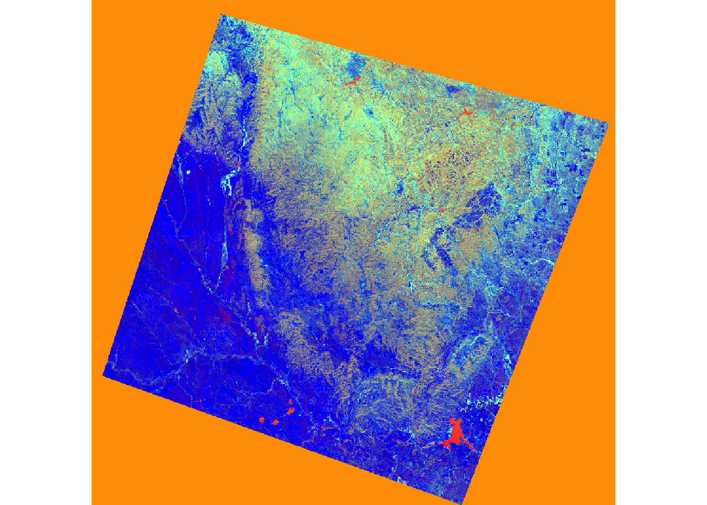
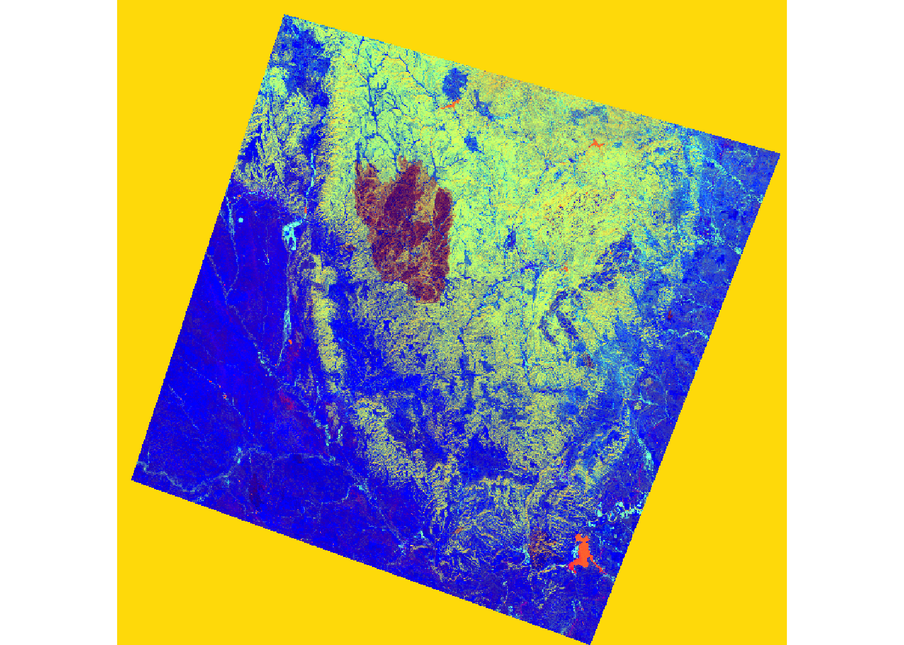
To further investigate the extent of the fire, I will use the differenced Normalized Burn Ratio (dNBR), obtained from the SWIR and NIR bands. A burned area typically exhibits high SWIR reflectance and low NIR reflectance compared to a forested area. By calculating this index before and after a fire event, I can map the extent and severity of the fire. The following code illustrates this result, where high values in the dNBR output indicate burned areas.
```{r aa, message=FALSE}
pre_nbr <- (pre$NIR - pre$SWIR2)/((pre$NIR + pre$SWIR2)+.0001)
post_nbr <- (post$NIR - post$SWIR2)/((post$NIR + post$SWIR2)+.0001)
dnbr <- pre_nbr - post_nbr
dnbr[dnbr <= 0] <- NA
tm_shape(dnbr)+
tm_raster(style= "equal", n=7, palette=get_brewer_pal("YlOrRd", n = 7, plot=FALSE))+
tm_layout(legend.outside = TRUE)
```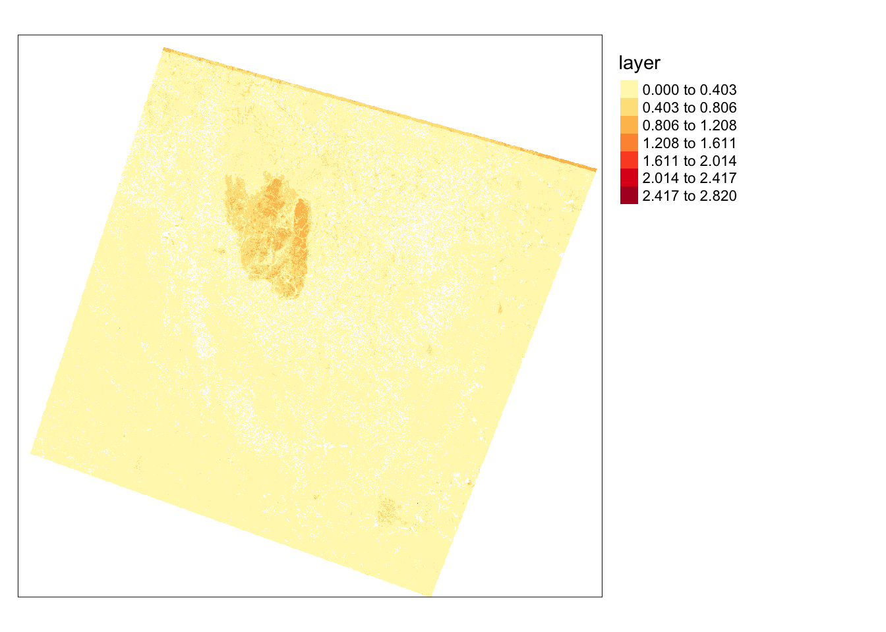
Analyzing local patterns in image data is commonly achieved by applying moving windows or kernels over the image to transform or summarize pixel values. In R, this can be done using the focal() function from the raster package.
In the initial example, I calculate the average NDVI value in 5-by-5 cell windows. This involves generating a kernel using the matrix() function. Specifically, I create a kernel with dimensions of 5-by-5 values, totaling 25 cells. Each cell is filled with 1/25. Passing this over the grid will calculate the mean in each window.
ndvi5 <- focal(ndvi, w=matrix(1/25,nrow=5,ncol=5))
tm_shape(ndvi5)+
tm_raster(style= "quantile", n=7, palette=get_brewer_pal("Greens", n = 7, plot=FALSE))+
tm_layout(legend.outside = TRUE)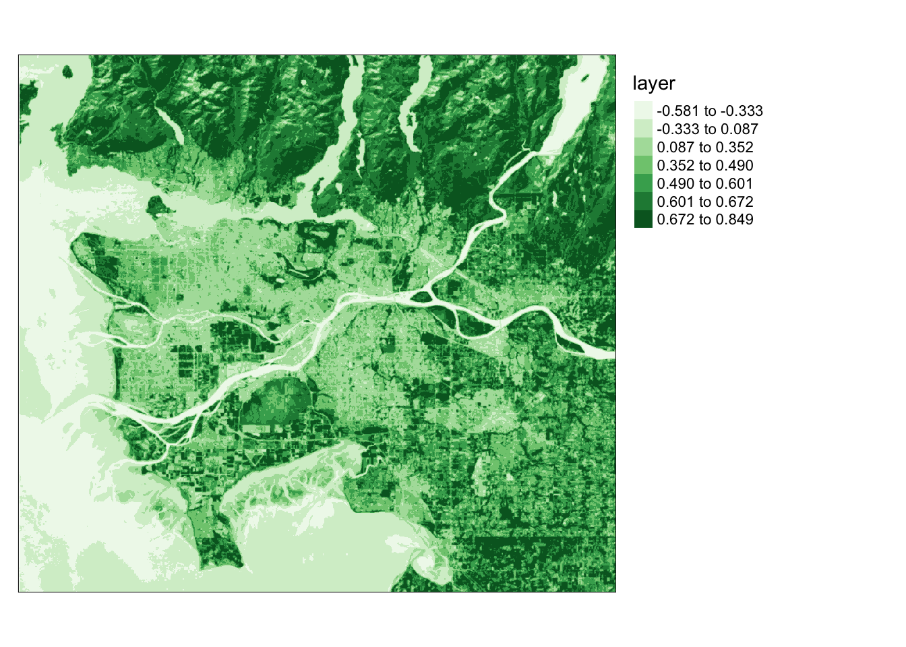
gx <- c(2, 2, 4, 2, 2, 1, 1, 2, 1, 1, 0, 0, 0, 0, 0, -1, -1, -2, -1, -1, -1, -2, -4, -2, -2)
gy <- c(2, 1, 0, -1, -2, 2, 1, 0, -1, -2, 4, 2, 0, -2, -4, 2, 1, 0, -1, -2, 2, 1, 0, -1, -2, 2, 1, 0, -1, -2)
gx_m <- matrix(gx, nrow=5, ncol=5, byrow=TRUE)
gx_m
[,1] [,2] [,3] [,4] [,5]
[1,] 2 2 4 2 2
[2,] 1 1 2 1 1
[3,] 0 0 0 0 0
[4,] -1 -1 -2 -1 -1
[5,] -1 -2 -4 -2 -2
gy_m <- matrix(gy, nrow=5, ncol=5, byrow=TRUE)
gy_m
[,1] [,2] [,3] [,4] [,5]
[1,] 2 1 0 -1 -2
[2,] 2 1 0 -1 -2
[3,] 4 2 0 -2 -4
[4,] 2 1 0 -1 -2
[5,] 2 1 0 -1 -2ndvi_edgex <- focal(ndvi, w=gx_m)
ndvi_edgey <- focal(ndvi, w=gy_m)
tm_shape(ndvi_edgex)+
tm_raster(style= "quantile", n=7, palette=get_brewer_pal("-Greys", n = 7, plot=FALSE))+
tm_layout(legend.outside = TRUE)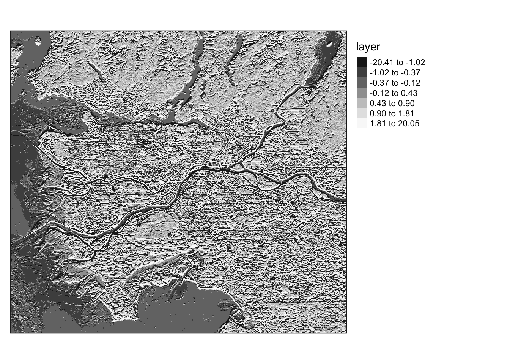
tm_shape(ndvi_edgey)+
tm_raster(style= "quantile", n=7, palette=get_brewer_pal("-Greys", n = 7, plot=FALSE))+
tm_layout(legend.outside = TRUE)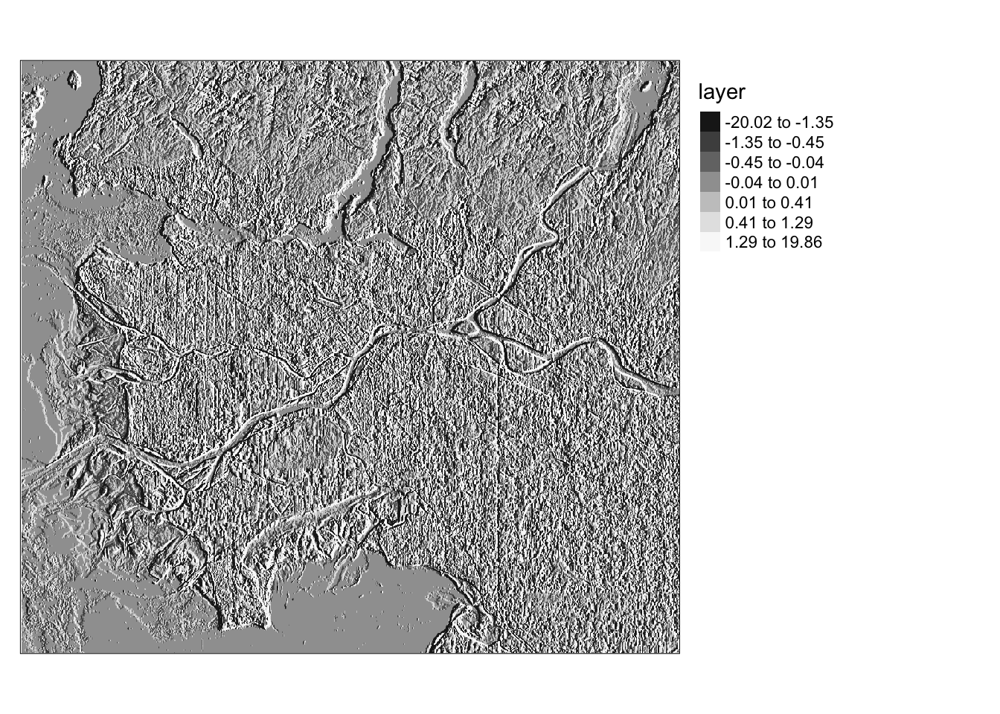
For further exploration of raster and image analysis techniques, refer to the documentation for the raster and RStoolbox packages. Additionally, consider using terra for analyses on multispectral image data.